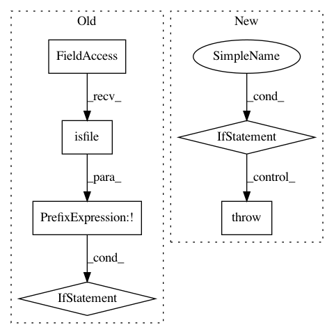

997f7e378ffd48fd23107037534ad12cc471cdb6,lingpy/basic/_parser.py,_QLCParser,_init_first,#_QLCParser#Any#Any#,70
Before Change
// raise an error otherwise
else:
if not os.path.isfile(filename):
raise IOError(
"[ERROR] Input file does not exist."
)
else:
exc_type, exc_value, exc_traceback = sys.exc_info()
lines = traceback.format_exception(exc_type, exc_value,
exc_traceback)
raise ValueError("[ERROR] Could not parse the input file. {0}".format(lines))
// load the configuration file
if not conf:
conf = os.path.join(rcParams["_path"],"data","conf","qlc.rc")
// read the file defined by its path in conf
After Change
self.filename = filename
// raise an error otherwise
elif type(filename) == str:
raise IOError("[ERROR] Input file "{0}" does not exist.".format(filename))
else:
raise TypeError("[ERROR] Unrecognized type for "filename" arguemnt: {0}".format(type(filename).__name__))
// load the configuration file
In pattern: SUPERPATTERN
Frequency: 3
Non-data size: 6
Instances
Project Name: lingpy/lingpy
Commit Name: 997f7e378ffd48fd23107037534ad12cc471cdb6
Time: 2013-10-25
Author: frank@pc08447.Germanistik-Kunst.Uni-Marburg.DE
File Name: lingpy/basic/_parser.py
Class Name: _QLCParser
Method Name: _init_first
Project Name: pytorch/audio
Commit Name: 4bfebd857d9b94dff98e88c8cc59880f8fa54ec7
Time: 2020-08-19
Author: abhi.dubey011999@gmail.com
File Name: torchaudio/datasets/vctk.py
Class Name: VCTK
Method Name: __init__
Project Name: NeuroTechX/moabb
Commit Name: 66b0061685aa10d124ef89c9a2f5ddeb7ce1ea1b
Time: 2018-01-24
Author: vjayaram@danube.is.localnet
File Name: moabb/datasets/download.py
Class Name:
Method Name: data_path